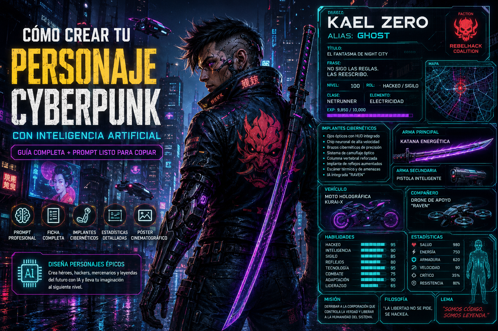

Cómo crear tu personaje Cyberpunk con Inteligencia Artificial
¿Te imaginas vivir en una enorme ciudad futurista llena de rascacielos, neones, implantes cibernéticos, inteligencia artificial y tecnología avanzada?
Gracias a la Inteligencia Artificial, hoy es posible crear un personaje completamente original inspirado en el universo Cyberpunk, con una ficha profesional que incluya su historia, habilidades, implantes, armas, estadísticas y un impresionante póster cinematográfico.
Ya sea que quieras crear un mercenario, un hacker, un ingeniero, un cazarrecompensas o un rebelde que lucha contra las grandes corporaciones, la IA puede ayudarte a transformar tu imaginación en una ilustración digna de un videojuego AAA.

🌆 ¿Qué es el estilo Cyberpunk?
El Cyberpunk es un género de ciencia ficción que combina tecnología extremadamente avanzada con sociedades futuristas donde predominan las grandes corporaciones, la inteligencia artificial, los implantes cibernéticos y enormes ciudades iluminadas por neones.
Sus historias suelen desarrollarse en un futuro donde la tecnología ha cambiado por completo la vida de las personas, pero también ha generado nuevos conflictos relacionados con el poder, la libertad y la identidad humana.
Este estilo ha inspirado videojuegos, películas, series y novelas muy populares gracias a su estética futurista y a sus personajes llenos de personalidad.
Características del estilo Cyberpunk
- 🌃 Ciudades futuristas llenas de neones.
- 🤖 Inteligencia Artificial avanzada.
- 🦾 Implantes cibernéticos.
- 💻 Hackers y expertos en tecnología.
- 🚗 Vehículos futuristas.
- 🔫 Armas de alta tecnología.
- 🏙️ Megacorporaciones dominando el mundo.
- ⚡ Ambientes oscuros con iluminación de colores.
- 🎮 Estética inspirada en videojuegos futuristas.
El Cyberpunk representa un futuro donde la tecnología alcanza niveles increíbles, pero también plantea preguntas sobre el poder, la libertad y el papel de la humanidad en un mundo dominado por las máquinas.
🎯 El objetivo de este prompt
En este artículo aprenderás a crear una ficha completa de personaje Cyberpunk utilizando Inteligencia Artificial.
No se trata únicamente de generar una imagen bonita. El objetivo es construir un personaje con identidad propia, capaz de transmitir una historia, una personalidad y un estilo visual único.
El resultado será un póster futurista donde aparecerán elementos como:
- 🧑 Nombre del personaje.
- 🎭 Alias.
- 🏢 Facción.
- ⚔️ Clase.
- 📈 Nivel.
- 🦾 Implantes cibernéticos.
- 🔫 Armas.
- 🤖 Compañero robótico o IA.
- 🚀 Vehículo futurista.
- 💡 Filosofía y lema.
- 📊 Estadísticas.
- 🌆 Un espectacular escenario Cyberpunk.
Mientras más detalles proporciones a la Inteligencia Artificial, más impresionante y personalizado será el resultado final.
En las siguientes secciones encontrarás un prompt completo que podrás copiar, modificar y adaptar para crear un personaje totalmente único, listo para formar parte de cualquier universo Cyberpunk.
📋 Prompt completo
A continuación encontrarás un prompt diseñado para generar un personaje Cyberpunk completamente personalizado utilizando Inteligencia Artificial.
Puedes modificar cualquiera de los apartados para crear un personaje único. Cambia el nombre, la clase, la ciudad, las armas, los implantes o incluso inventa una nueva facción. Mientras más información proporciones, más espectacular será el resultado.
Simplemente copia el siguiente prompt y pégalo en tu IA favorita.
=== PÓSTER CYBERPUNK === NOMBRE: Nombre del personaje ALIAS: Tu apodo TÍTULO: El título que represente al personaje. FRASE PRINCIPAL: Una frase épica. CIUDAD: Night City Neo Tokyo Neo México Ciudad personalizada FACCIÓN: Corporación Mercenario Rebelde Hacker Pandilla Policía futurista CLASE: Netrunner Solo Techie Ingeniero Cazarrecompensas Mercenario Francotirador Médico Cibernético NIVEL: 100 ROL: Ataque Defensa Soporte Hackeo Sigilo ELEMENTO: Electricidad Plasma Neón Hielo Digital Fuego Tecnológico IMPLANTES CIBERNÉTICOS: - Ojos ópticos - Brazos mecánicos - Columna reforzada - Piernas de alta velocidad - Sistema de camuflaje - IA integrada - Chip neuronal - Escáner térmico ARMA PRINCIPAL: Katana energética Pistola inteligente Escopeta electromagnética Francotirador láser Rifle de plasma Guantes eléctricos ARMA SECUNDARIA: Dagas de energía Drone de combate Granadas EMP Pistola automática VEHÍCULO: Moto futurista Auto volador Drone personal Hoverbike COMPAÑERO: Robot Android IA holográfica Drone de apoyo HABILIDADES: - Hackeo - Inteligencia - Reflejos - Sigilo - Tecnología - Liderazgo - Adaptación - Combate MISIÓN: Derrotar una corporación. Descubrir una conspiración. Proteger la ciudad. Robar tecnología secreta. Salvar a la humanidad. FILOSOFÍA: Escribe una frase que represente la forma de pensar del personaje. LEMA: Una frase corta e impactante. ESCENARIO: Ciudad futurista. Lluvia intensa. Calles iluminadas con neones. Pantallas holográficas gigantes. Rascacielos. Vehículos voladores. Anuncios digitales. Niebla. Reflejos sobre el pavimento mojado. COLORES: Azul Neón Morado Cian Negro Magenta ESTILO: Cyberpunk 2077 Blade Runner Ghost in the Shell Anime Futurista Ultra detallado Cinematográfico 8K TIPOGRAFÍA: Tecnológica. Interfaces holográficas. HUD futurista. Barras de energía. Estadísticas digitales. DETALLES EXTRA: Quiero que parezca un póster oficial de un videojuego AAA. Agregar: - Interfaces holográficas. - Código binario. - Circuitos electrónicos. - Luces LED. - Mini mapa. - Estadísticas del personaje. - Nivel. - Logo de la facción. - Símbolos tecnológicos. - Efectos de electricidad. - Reflejos de neón. - Calidad ultra realista.
Este prompt está pensado como una base. No es necesario utilizar todos los campos, pero cuantos más detalles proporciones, más personalizado será el resultado generado por la Inteligencia Artificial.
💡 Consejo: no tengas miedo de experimentar. Cambia la ciudad, inventa nuevas facciones, crea implantes originales o combina diferentes estilos para obtener un personaje completamente único.
🧩 Explicación de cada sección del prompt
El prompt anterior está dividido en varias secciones para ayudar a la Inteligencia Artificial a comprender mejor cómo debe ser tu personaje.
No es obligatorio completar todos los campos, pero mientras más información proporciones, más original, coherente y detallado será el resultado final.
👤 Nombre
Es el nombre principal de tu personaje. Puedes utilizar tu propio nombre o inventar uno completamente nuevo que encaje con el universo Cyberpunk.
Ejemplos:
- Alex Zero
- Nova
- Kai Hunter
- Raven
🏷️ Alias
El alias es el nombre por el que todos conocen al personaje. Generalmente representa su reputación dentro de la ciudad.
Ejemplos:
- Ghost
- Black Raven
- Neon Wolf
- Zero
👑 Título
El título representa el rango o reconocimiento que ha conseguido tu personaje dentro del mundo Cyberpunk.
Ejemplos:
- El Fantasma de Night City
- El Hacker Supremo
- La Leyenda del Distrito 9
- El Mercenario Imparable
💬 Frase principal
Es una frase que define la personalidad del personaje y suele aparecer como lema principal del póster.
Ejemplos:
- El futuro pertenece a quienes se atreven.
- No sigo las reglas. Las reescribo.
- La tecnología es mi mejor arma.
🌆 Ciudad
Define el lugar donde vive o desarrolla sus misiones. También influye en el ambiente de la imagen.
Ejemplos:
- Night City
- Neo Tokyo
- Neo México
- Ciudad personalizada
🏢 Facción
Toda historia necesita aliados y enemigos. La facción determina para quién trabaja el personaje o contra quién lucha.
Ejemplos:
- Mercenarios
- Corporación Tecnológica
- Hackers Rebeldes
- Policía Metropolitana
⚔️ Clase
La clase define el estilo de combate y las habilidades principales del personaje.
Ejemplos:
- Netrunner
- Solo
- Ingeniero
- Techie
- Cazarrecompensas
⭐ Nivel
El nivel representa la experiencia y el poder del personaje.
Puedes utilizar cualquier número según la historia que quieras contar.
🎯 Rol
Indica cuál es la función principal del personaje durante una misión.
Ejemplos:
- Ataque
- Defensa
- Soporte
- Hackeo
- Sigilo
⚡ Elemento
Aunque el universo Cyberpunk no utiliza magia tradicional, puedes darle un estilo especial mediante energía, electricidad o tecnología avanzada.
Ejemplos:
- Plasma
- Electricidad
- Neón
- Hielo Digital
🦾 Implantes Cibernéticos
Son las mejoras tecnológicas que hacen único al personaje.
Esta es una de las secciones más importantes porque define gran parte de la apariencia visual.
🔫 Armas
Las armas ayudan a reforzar el estilo del personaje.
Puedes combinar armas tradicionales con tecnología futurista.
🚗 Vehículo
El vehículo aporta personalidad y hace que el escenario se vea mucho más impresionante.
Ejemplos:
- Moto futurista
- Auto volador
- Hoverbike
- Drone de transporte
🤖 Compañero
Muchos personajes están acompañados por un robot, una Inteligencia Artificial o un drone de apoyo.
Este detalle suele hacer que la ilustración sea mucho más interesante.
📈 Habilidades
Aquí debes describir aquello en lo que realmente destaca tu personaje.
Ejemplos:
- Hackeo
- Velocidad
- Sigilo
- Combate
- Liderazgo
🎯 Misión
Toda historia necesita un objetivo.
La misión ayuda a que la IA construya un personaje con mayor personalidad y coherencia.
🧠 Filosofía y lema
Estas frases permiten expresar la forma de pensar del personaje y le dan una identidad mucho más fuerte.
🌃 Escenario
Describe el mundo donde aparecerá el personaje.
Cuantos más detalles añadas sobre edificios, neones, lluvia, drones, hologramas y efectos visuales, más cinematográfica será la imagen.
🎨 Colores
La paleta de colores ayuda a definir el estilo visual.
Los tonos azul, morado, cian y magenta son característicos del género Cyberpunk.
🖼️ Estilo artístico
Esta sección indica a la IA qué tipo de apariencia deseas para la imagen.
Ejemplos:
- Cyberpunk 2077
- Blade Runner
- Ghost in the Shell
- Anime Futurista
- Cinematográfico
- Ultra detallado
✨ Detalles extra
Es el apartado donde realmente puedes marcar la diferencia.
Aquí puedes pedir efectos especiales, interfaces holográficas, estadísticas, barras de energía, mapas, luces LED, circuitos, drones adicionales o cualquier elemento que haga que el resultado parezca un póster oficial de un videojuego AAA.
💡 Recuerda: la Inteligencia Artificial obtiene mejores resultados cuando recibe instrucciones claras y detalladas. Un prompt bien construido puede transformar una idea sencilla en un personaje espectacular y completamente único.
❌ Prompt malo vs ✅ Prompt bueno
Uno de los errores más comunes al utilizar Inteligencia Artificial es proporcionar instrucciones demasiado simples. Aunque la IA intentará generar un resultado, normalmente será muy genérico y con pocos detalles.
❌ Prompt malo
Hazme un personaje Cyberpunk.
Con una instrucción tan corta, la IA tendrá que imaginar casi todo: la apariencia, la historia, las armas, el escenario y la personalidad. El resultado probablemente será correcto, pero difícilmente será único.
✅ Prompt bueno
Quiero crear un personaje Cyberpunk. Nombre: Kael Zero Alias: Ghost Clase: Netrunner Facción: Hackers Rebeldes Nivel: 100 Implantes: Ojos cibernéticos. Brazos mecánicos. Chip neuronal. Arma: Katana energética. Vehículo: Moto futurista. Escenario: Night City bajo la lluvia, llena de neones, pantallas holográficas y vehículos voladores. Estilo: Cyberpunk 2077 Blade Runner Anime futurista Ultra detallado 8K Quiero que el resultado sea un póster oficial de un videojuego AAA con estadísticas, interfaces holográficas y calidad cinematográfica.
Observa cómo el segundo prompt proporciona mucha más información. Gracias a ello, la Inteligencia Artificial puede construir una imagen mucho más espectacular, coherente y personalizada.
💡 Consejos para obtener mejores resultados
Si quieres que la IA genere personajes realmente impresionantes, sigue estas recomendaciones:
-
Describe el escenario.
No basta con decir "ciudad futurista". Agrega lluvia, neones, humo, hologramas, drones, edificios gigantes o cualquier elemento que ayude a crear una atmósfera única. -
Define una personalidad.
Los mejores personajes tienen una historia y una forma de pensar. Describe sus valores, motivaciones y objetivos. -
Utiliza referencias visuales.
Mencionar estilos como Cyberpunk 2077, Blade Runner o Ghost in the Shell ayuda a la IA a comprender mejor el aspecto que buscas. -
No tengas miedo de experimentar.
Prueba diferentes colores, armas, vehículos y facciones. A veces los mejores resultados aparecen después de varias versiones. -
Mejora el prompt poco a poco.
Si el resultado no te convence, modifica únicamente algunos apartados en lugar de empezar desde cero. -
Añade muchos detalles.
Cuanta más información reciba la IA, más profesional será el resultado.
La diferencia entre una imagen común y una imagen espectacular normalmente no está en la herramienta que utilizas, sino en la calidad del prompt que escribes.
Conclusión
Crear personajes con Inteligencia Artificial es una excelente forma de combinar creatividad y tecnología.
Gracias a un prompt bien estructurado puedes diseñar héroes, mercenarios, hackers, ingenieros o cualquier personaje futurista con un nivel de detalle que hace pocos años parecía imposible.
Lo más importante es experimentar y mejorar continuamente tus instrucciones. Cada pequeño detalle que agregues ayudará a que la IA entienda mejor tu idea y genere resultados mucho más impresionantes.
Esperamos que esta guía te sirva como punto de partida para crear tu propio personaje Cyberpunk y descubrir todo el potencial que ofrece la Inteligencia Artificial.
¡Ahora es tu turno! Personaliza el prompt, deja volar tu imaginación y crea un personaje que parezca salido de un videojuego AAA.
📚 Sigue aprendiendo
Si te gustó este artículo, también te recomendamos estas guías disponibles en el blog: